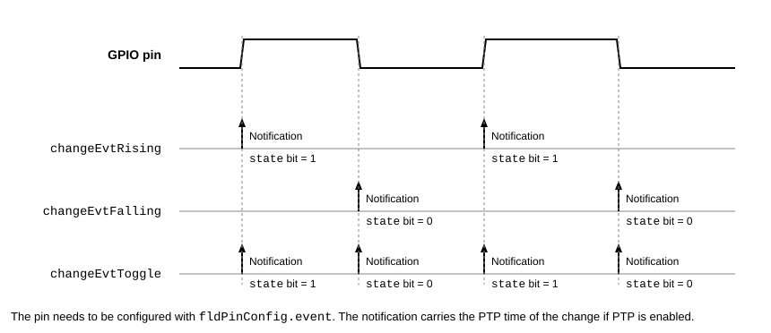

GPIO Driver
File: endpoints/gpio/gpio_dev.proto
Package: esb.gpio
GPIO configuration, actions, queries, and notifications for RCP.
A GPIO endpoint is a controller for a group of general-purpose input/output (GPIO) pins. Because commands and notifications use 32-bit masks, a controller handles up to 32 pins.
Pins and masks
The GPIO number of a pin is its bit position in the masks of commands and notifications: GPIO #0 is the least
significant bit (LSb). The pin configuration assigns the GPIO numbers to the physical pins and sets their electrical
properties, see rcp.pins.fldConfig.fldConfigItem.gpio.
A command combines operations on any number of pins: it configures the direction of the pins, reads their state, and
drives, clears, or toggles them. A pin is only affected by an operation if its bit is set in the mask of that
operation. For example, a fldCmd.clr mask of 0x09 (binary 00001001) clears GPIO #0 and GPIO #3 at the same
time. The states that a command reads are returned in the action result, see fldActionResult.gpio.
Pin change events
An input can report its changes to the client without being polled. Its configuration selects the changes that
generate an event (see fldPinConfig.event). An event generates a notification, unless the pin is configured as
quiet (see fldPinConfig.quiet), and it can trigger actions, see fldActionEvent. The figure shows a pin and
the notifications that each event type generates:

A notification carries the state of all pins of the controller and tells which of them changed.
Example
To report the rising edges of GPIO #3 and to drive GPIO #0 high:
seq: 1
dir { config { hndl: 1 gpio { pin { num: 3 event: changeEvtRising debounceNs: 1000 } } } }
dir { action { hndl: 1 gpio { out: 0x01 set: 0x01 } } }